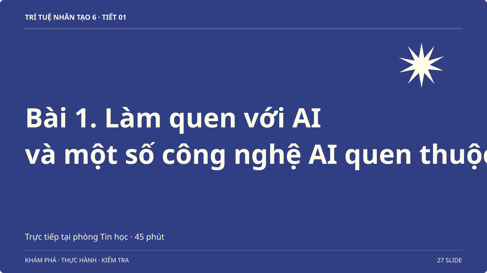
Bài 1. Làm quen với AI và một số công nghệ AI quen thuộc
Hai bảng ghi và thẻ giới thiệu một tính năng AI.
Mở bài học12 tiết học · Khám phá, thực hành và dự án.
Xem mẫu rồi tự làm. Em kiểm kết quả trước khi dùng.

Hai bảng ghi và thẻ giới thiệu một tính năng AI.
Mở bài học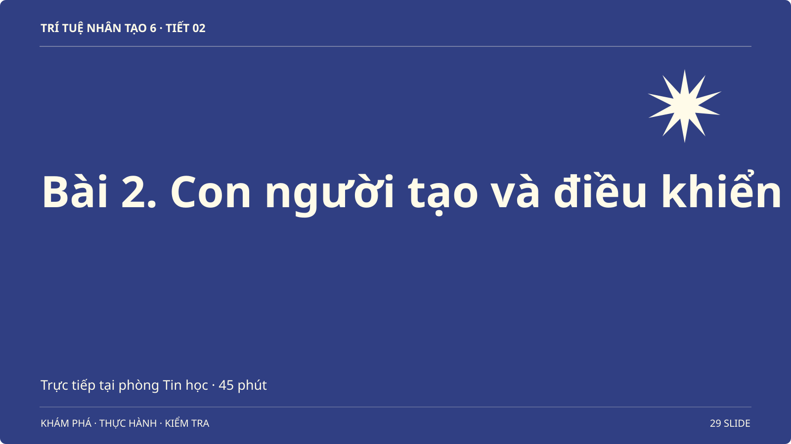
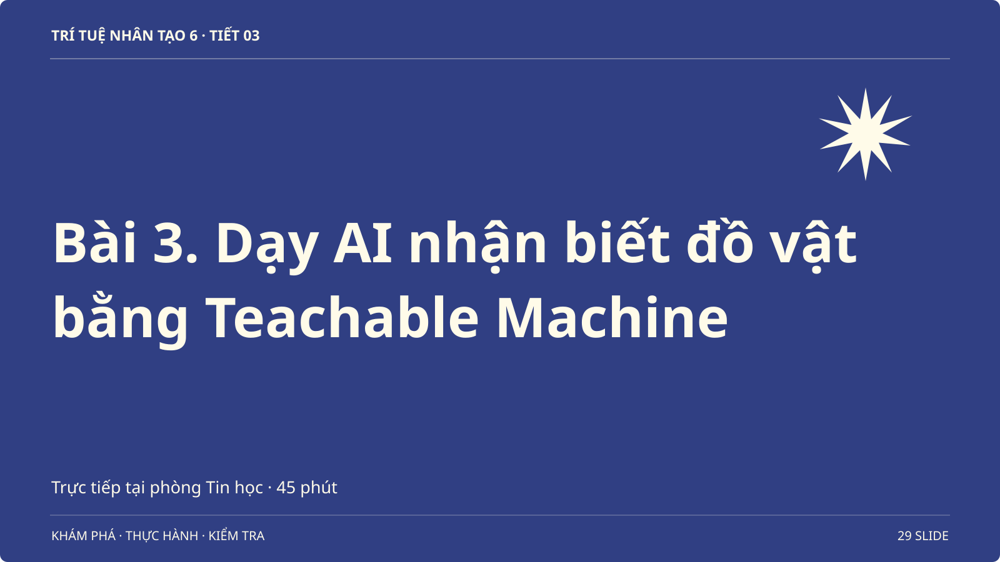
Bộ ảnh Bút/Cốc và bảng ghi hai lần thử mới.
Mở bài học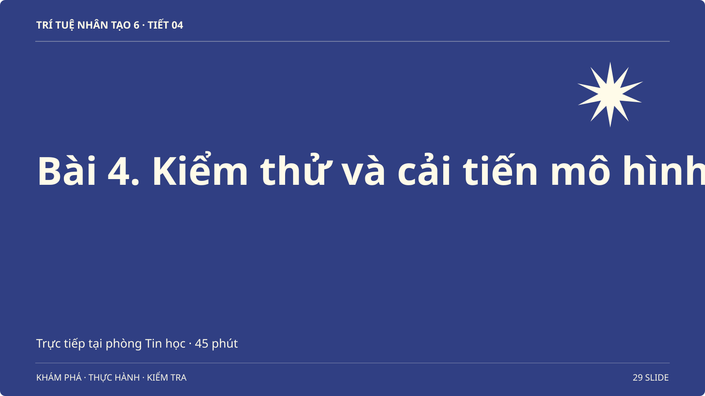
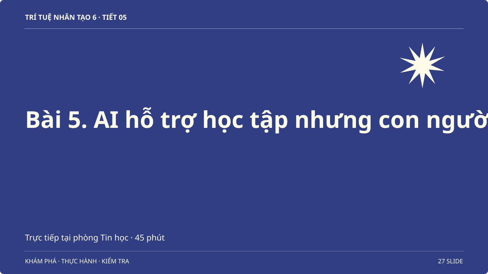
Bảng kiểm bản dịch và lí do giữ, sửa hoặc chưa dùng.
Mở bài học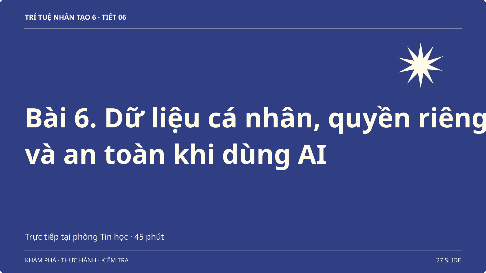
Câu hỏi đã xóa thông tin thừa và thẻ hỏi an toàn.
Mở bài học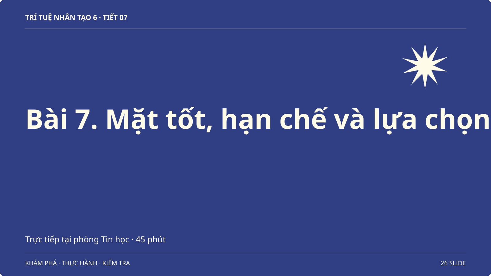
Bảng chọn cách dùng AI và ba quy tắc cụ thể.
Mở bài học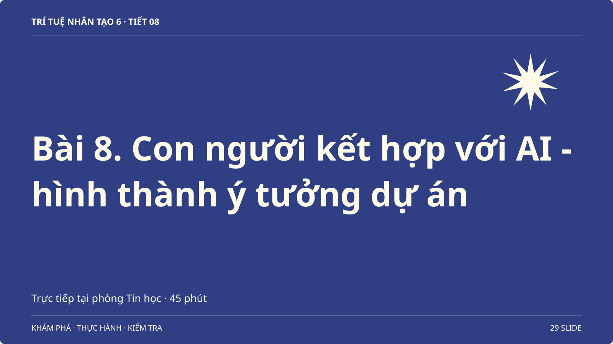
Một ý tưởng, bản phác thảo và phiếu tóm tắt nhiệm vụ.
Mở bài học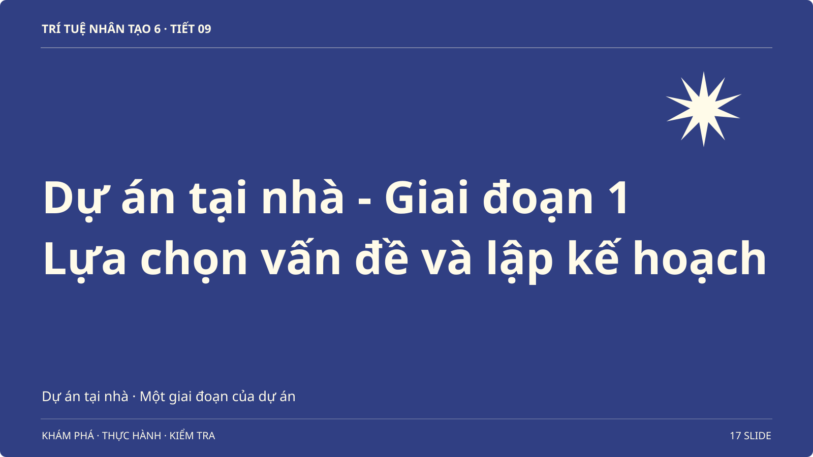
Kế hoạch có việc, người phụ trách và mốc hoàn thành.
Mở bài học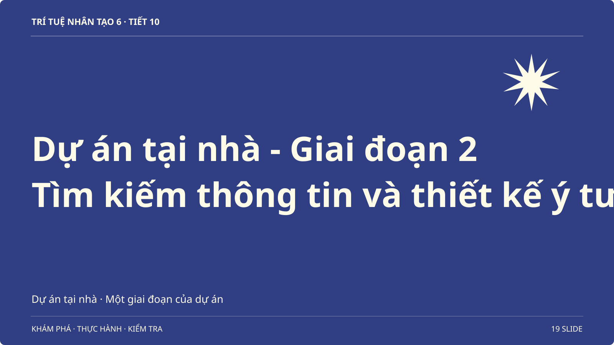
Hai nguồn đã đọc, sơ đồ và bố cục sản phẩm.
Mở bài học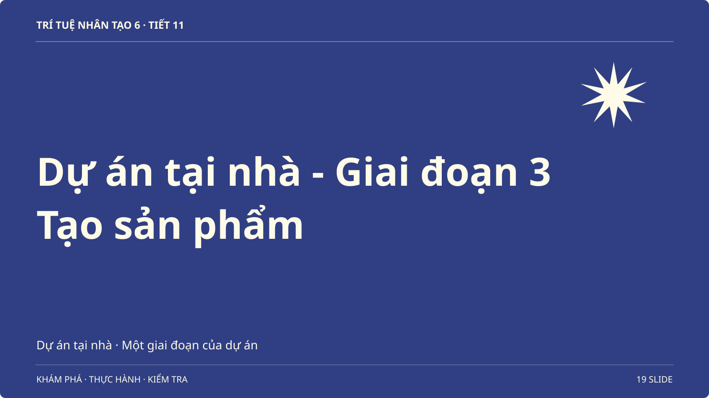
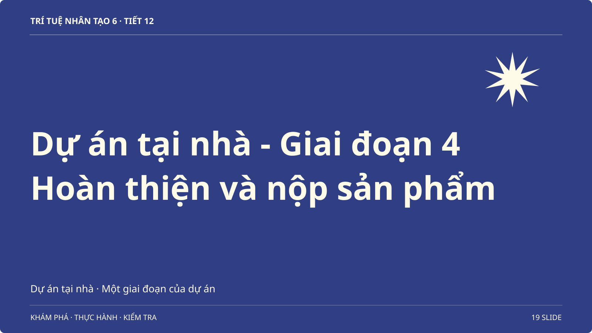
Bản cuối, video 2–3 phút và những lỗi em đã sửa.
Mở bài học← → chuyển slide · M mục lục · N ghi chú · F toàn màn hình.
Bấm Chiếu để mở cửa sổ cho lớp xem. Màn chính là màn Thầy/Cô có ghi chú. Đưa cửa sổ chiếu sang màn hình thứ hai. Bấm F để xem toàn màn hình.
Phiếu nằm ngay trên slide. Em nhập và lưu nháp trên thiết bị. Bấm Tải bài làm rồi gửi theo kênh lớp. Tiết 1–7: tự làm trước, so theo cặp sau.